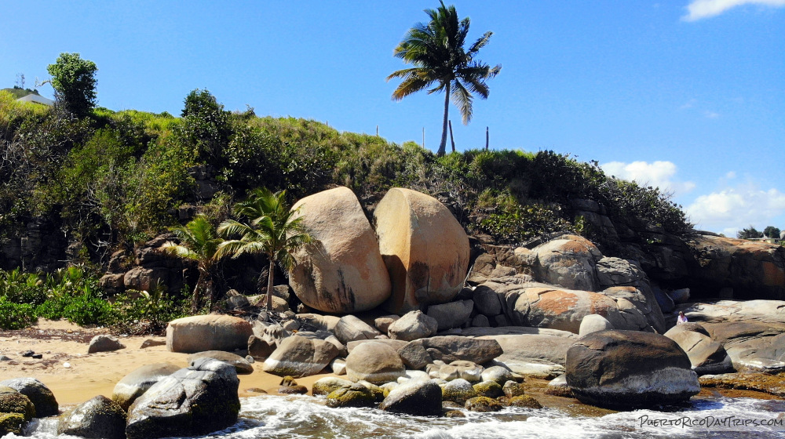
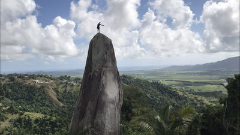
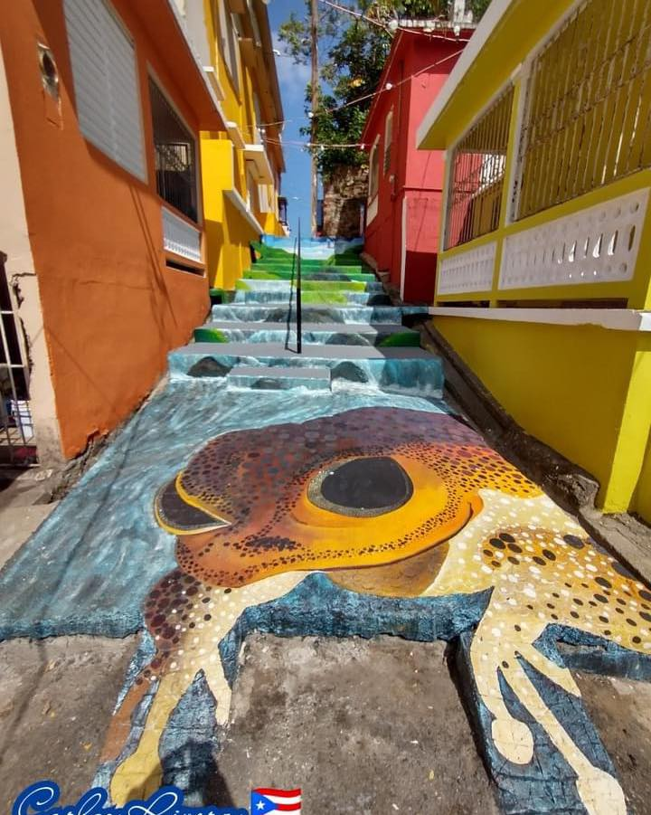

Antigua Central Azucarera Antonio Roig Torrellas
.jpg)
El origen de Central Roig se remonta a la década de 1870 cuando era un ingenio conocido como Carmen, bautizado así en honor a María del Carmen Rodríguez esposa de su propietario Ramón Aponte Ortiz de la Renta. Su nombre fue cambiado a Hacienda Mercedita en 1878 cuando fue adquirido por el inmigrante español Cristóbal Vallecillo Morales en honor a su única hija María de las Mercedes Vallecillo Mandry (1883-1933).
Pueden visitar la Antigua Central Azucarera Antonio Roig Torrellas en:
- Dirección: 346G+FF3, Cll La Central, Yabucoa, 00767
Piedra Las Guaretas (Cueva de las Cabras)
Esta enorme piedra partida a la mitad es un gran enigma. ¿Cómo se partió? Los vecinos cercanos aseguran que otro piedra en un deslizamiento al caer encima la quebró.
Pueden visitar la Piedra Las Guaretas (Cueva de las Cabras) en:
- Dirección: 1 PR-901, Yabucoa, 00767
Piedra Blanca
En el Barrio Jacanas de Yabucoa se encuentra esta enorme granito de 70 pies de altura conocida como Piedra Blanca debido a su color. En Puerto Rico existen este tipo de piedras y la mayoría de ellas se pueden encontrar cerca de las costas de Yabucoa. Este peñón en particular es uno de los favoritos para los amantes de la escalada deportiva en Puerto Rico.
Pueden visitar la Piedra Blanca en:
- Dirección: 33WR+MX2, Yabucoa 00767
Escaleras Coquí
Este mural es una atracción reciente ene l pueblo de Yabucoa. Presenta un paisaje con el coquí, uno de los animales más reconocidos de la isla.
Pueden visitar las Escaleras Coquí en:
- Dirección: 24XC+X4M, Yabucoa, 00767